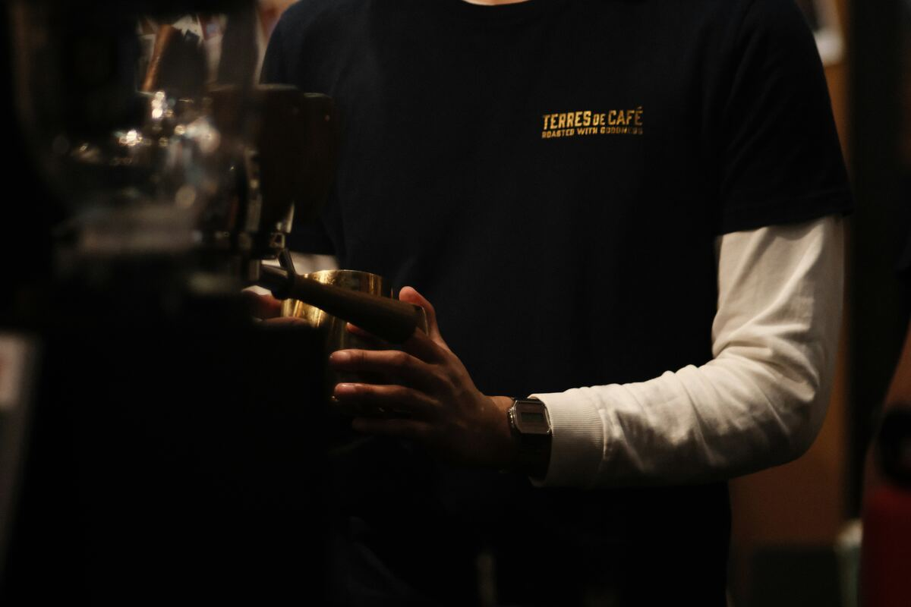

Our Story
Bean There Café started in 2015 as a tiny coffee cart on a busy corner. Our founder, Maria, wanted to serve coffee that tasted as good as it smelled.
People loved it, and soon the cart grew into the warm little café you see today. We still buy our beans from small farms and roast them every week.
Today we bake fresh cakes each morning and welcome everyone like a friend. Come in, sit down and stay a while.
Meet the Team
- Maria Lopez - Founder and Head Barista
- Tom Baker - Head Baker
- Aisha Bello - Café Manager
Frequently Asked Questions
Do you have Wi-Fi?
Yes, we have free Wi-Fi for all customers. Just ask at the counter for the password.
Are you dog friendly?
Yes, well-behaved dogs are welcome at our outdoor tables. We even have a water bowl ready.
Do you have vegan options?
Yes, we offer oat and soy milk, plus vegan muffins and toast. Ask our team if you need help choosing.
Can I book a table?
Yes, you can book using the form on our Contact page. Choose "Table booking" as the reason.